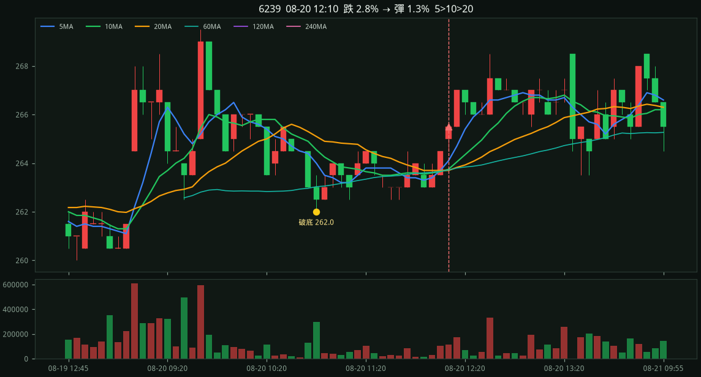
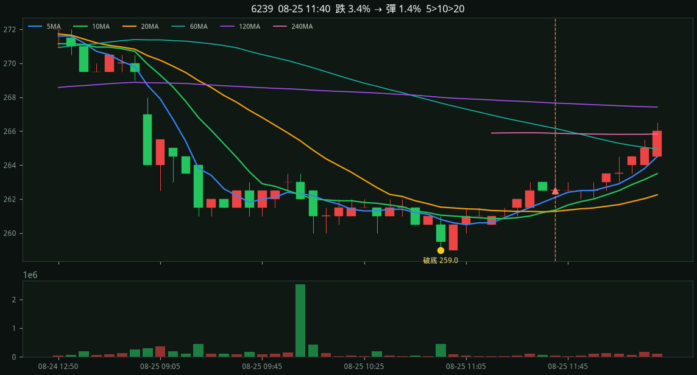

#1 · 62392026-08-20 12:10
+0.56%
進場 265.50 破底 262.00 @ 10:50 跌幅 2.8% 反彈 1.3% MA5 264.10 MA10 263.75 MA20 263.70

5d · 1 檔
急殺破近 4 小時低點或今日低點（跌幅 ≥ 2%）後，24 根內第一次 5MA > 10MA > 20MA 就通知。
進場 265.50 破底 262.00 @ 10:50 跌幅 2.8% 反彈 1.3% MA5 264.10 MA10 263.75 MA20 263.70

進場 262.50 破底 259.00 @ 10:55 跌幅 3.4% 反彈 1.4% MA5 262.10 MA10 261.35 MA20 261.27
